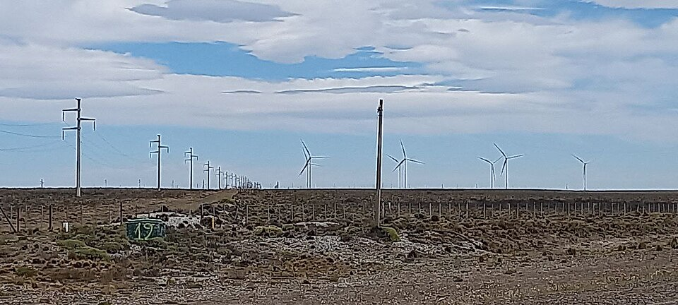

Cuánta energía puede sacarle al viento un molino como máximo (59,3%)
Un molino de viento perfecto, sin fricción y sin ninguna pérdida, ¿podría aprovechar toda la energía del viento que lo atraviesa? No, y la razón es linda. Para sacarle toda la energía, tendría que frenar el aire por completo. Pero el aire frenado no se va, y el que viene detrás ya no puede pasar. Hay un punto óptimo entre frenar demasiado y frenar poco, y está en 16/27.
La deducción del límite de Betz, también llamado de Betz-Joukowsky, usa el modelo más simple posible: la turbina es un disco fino por el que el fluido pasa en dirección axial [1]. Este modelo no dice nada sobre palas ni sobre diseño. Las hipótesis son un flujo estacionario, homogéneo, incompresible y sin viscosidad, uniforme sobre el disco, con una estela sin rotación [1]. El viento llega con velocidad v₀, atraviesa el disco a una velocidad v y se aleja con v₁, más lenta. Como el aire frena, el tubo de corriente se ensancha [1].
Un colador en el viento: el disco se comporta como un obstáculo poroso [1]. Si es muy abierto, el aire pasa casi sin frenarse y entrega poca energía. Si es casi cerrado, el aire frena mucho, pero se desvía para rodearlo y pasa poco por adentro. El mejor colador es intermedio.
El cálculo usa solo la conservación de la masa, de la cantidad de movimiento y de la energía. El empuje T sobre el disco se puede expresar de dos formas [1]. Primero, como la cantidad de movimiento que pierde el aire. Segundo, como el salto de presión a través del disco por su área A:
No se puede aplicar el teorema de Bernoulli a través del disco, porque ahí la presión da un salto, pero sí por separado antes y después [1]. Eso da p⁺ − p⁻ = ½ ρ (v₀² − v₁²). Comparando las dos expresiones aparece el resultado clave [1]:
La velocidad en el disco es exactamente el promedio entre la de adelante y la de atrás. La potencia extraída es el empuje por esa velocidad, y se compara con la potencia del viento que pasaría por el área del disco sin perturbarlo, ½ ρ A v₀³ [1]. Llamando x = v₁/v₀ (es la misma expresión de [1], escrita con esta variable):
Esta función tiene un máximo en x = 1/3 (se deriva e iguala a cero), la llamada condición de Betz [1]. Ahí, CP = 16/27 ≈ 0,593 [1][2], el resultado que lleva el nombre de Betz; Pellegri remite a su libro de 1926 [3]. El mejor rotor ideal reduce el viento a un tercio en la estela y a dos tercios en el propio disco.
Probemos con otros valores (cálculos propios): con x = 0,8, el molino frena poco y CP vale 0,32; con x = 0,5, frena demasiado y vale 0,56; con x = 1/3, llega a 0,59. Cerca de x = 0, la teoría deja de valer: si el aire se detuviera por completo, no habría flujo, así que siempre tiene que quedar un flujo residual a través de la turbina [1].
Un rotor de 100 metros de diámetro, con viento de 10 m/s y aire de densidad 1,2 kg/m³, tiene enfrente 4,7 MW de potencia del viento, y el límite de Betz es de 2,8 MW (cálculos propios). Como la potencia va con el cubo de la velocidad, a 5 m/s el viento ofrece ocho veces menos.
Las turbinas reales quedan por debajo del límite: no cumplen las hipótesis ideales del modelo. Según Pellegri, las turbinas de eje horizontal llegan a rendimientos del 40 al 45 %, y las de eje vertical, del 20 al 30 % [1]. El dato coincide con lo que señala Dabiri: los dispositivos modernos en flujo no confinado trabajan por debajo del límite, lo que respalda tácitamente su validez [2].

Un techo con condiciones: el resultado no es tan absoluto como suele contarse. Se obtuvo con flujo estacionario en un medio no confinado, y un disco que no se mueve en la dirección del viento [2]. John Dabiri, de Caltech, publicó en 2019 un marco teórico que relaja esas hipótesis: encontró movimientos no estacionarios que, en principio, podrían superar el límite también en promedio temporal, aunque las implementaciones físicas que propone son especulativas [2]. Es una prepublicación teórica, no un dispositivo que lo haya logrado.
Para extraer energía del viento hay que frenarlo, pero sin frenarlo tanto que deje de pasar. Combinando la conservación de la cantidad de movimiento con Bernoulli, se llega a que la velocidad en el rotor es el promedio de las velocidades antes y después, y a que el óptimo está en reducir el viento a un tercio en la estela. El resultado, 16/27 o 59,3 %, es un techo para un modelo ideal: las turbinas reales están por debajo.
Pregunta para la comunidad: Una central hidroeléctrica puede tener un rendimiento superior al 90 %. ¿Por qué no se le aplica el límite de Betz? ¿Qué diferencia hay entre una turbina dentro de un conducto y una en medio del viento?